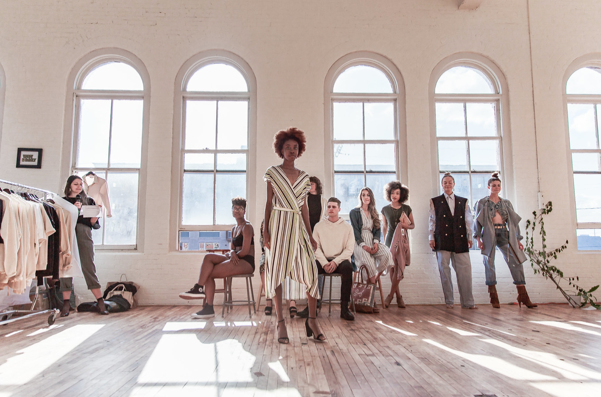

We are on the brink of a new decade and everyone is talking about sustainability. That it is a good and bad thing, depending on how you look at it. Yes, major strides have been made in the past few years: Luxury houses have vowed to stop destroying excess merchandise, and many of them are eliminating fur from their collections (entire cities are banning it, too, including San Francisco and potentially New York). Groundbreaking technologies are being introduced in recycled, organic, and bio-fabricated materials, and the secondhand and consignment market is estimated to reach $64 billion by 2030.
Micro-plastics, the tiny particles released into the ocean as a result of washing polyester and other petroluem-based fabrics, is the issue she’s tackling first. They are very difficult to intercept and are damaging the coral reefs, but corporations have zero responsibility in this. It has become a citizens responsibility—we are learning how to wash our polyester clothes safely, and we are buying bags that catch micro-plastics in the laundry [like Guppy Friend filters]. But what do you do with the substance collected in the bags? Where do you dispose of that?

Instead of patting ourselves on the back for buying micro-plastic filters or for refusing to buy a polyester dress, we should be advocating for policies that would actually hold companies accountable. Even if I spent the rest of my life avoiding plastic cups, my impact would not amount to a fraction of what a massive company could achieve by phasing out plastic or synthetics in a single year. Carrying a reusable mug is one thing, but what I should be doing is insisting that more coffee shops and cafés actually compost so we can properly dispose of those biodegradable cold brew cups and salad containers.
Brands should divert marketing funds to research and development. As sustainability becomes more of a trend, things are getting murkier in the world of social media and traditional marketing, from misleading Instagram ads to false statistics.
Everyone is talking about sustainability, but sometimes that is all they are doing. If the 2010s were about talk, then the 2020s need to be about action. To see legitimate progress and change, we need to point out the gaps in the dialogue and ask harder questions.
That might be the only missing ingredient in the fashion conversation. What if we could convince everyone that an organic silk dress was better for you than a polyester one? I would argue that it is true in terms of emotional value, but it might require something more physical and immediate to really get peoples attention.
{kind=link}
{kind=link}